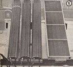
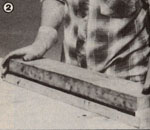
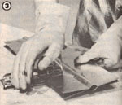
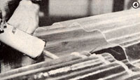
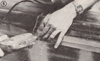
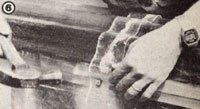
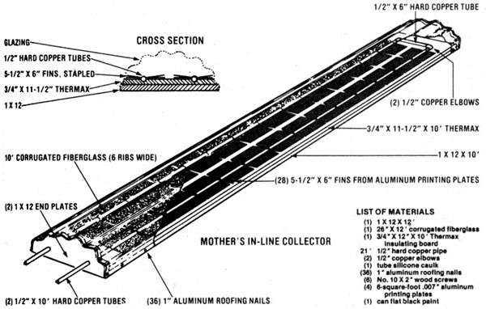

Mother's In-Line Collector
How to construct an easy-to-build solar water heater that's bound to cut your utility bills, including diagrams, instructions.
By the Mother Earth News editors
January/February 1981
Here's an easy-to-build solar water heater that's bound to cut your utility bills!
One of the most important considerations in designing a multitube solar collector is the establishment of even flow through all the lines in the device. Because of pipe friction and related hydraulic concerns, it's all too easy to end up effectively bypassing one portion of a heater's tubes . . . while letting the fluid move too quickly, through the other parts of the collector, to be thoroughly warmed. Considerable research has been dedicated to overcoming this difficulty . . . and the success or failure of such efforts is one of the factors that separate a top-notch collector from a mediocre one.
So when MOTHER's research staff set out to build a solar water heater that could be easily duplicated by the average handyman, they elected to avoid the problem entirely! Rather than attempting to mass a large number of copper tubes inside an insulated box-which is the most frequently used approach-our workers decided to assemble a single-pass, in-line device that can be duplicated as many times as is necessary to get a particular water-heating job done.
HOT STUFF
During the course of building and testing several different models-which were compared both with each other and with a standard commercial collector-our team not only developed an impressively effec tive water heater . . . they also discovered some interesting time- and moneysaving shortcuts. For instance, a unit that was constructed from copper pipe with copper fins soldered to the tubes actually achieved only a 1°F higher temperature than did a similar collector built with recycled .007" aluminum printing plates sandwiched and stapled over the pipe . . . and the rate of temperature rise was nearly the same!
Most important, the In-Line Collector performed almost as well as a costly commercial unit that had been purchased for comparison purposes. When we linked three of our homemade jobs together to achieve a square footage similar to that of the "benchmark" collector, the water temperature rose only 1°F per hour more slowly in our setup. And our "did 'em ourselves" devices produced water temperatures that peaked only 7°F lower than did those of the liquid heated by the store-bought model . . . at an amazing 140°F!
BUILD IT
You can prepare for the (roughly) half a day's time needed to duplicate MOM's collector by gathering up everything you'll need in advance. Consult the accompanying list of materials to determine what you'll have to buy at the building supply store. (Although we've chosen to show a 10' unit, you can build the heater in almost any length that's convenient.) Then locate a saber saw, tinsnips, a hammer, a heavy-duty stapler, a utility knife, a caulk gun, some 50-50 solder, and a propane torch.
Start by cutting the Thermax to match the width of your 1 X 12, and securing the foam board to the wood with panel adhesive. Then carve two grooves-down the length of the insulation-about 1/4" deep and 6 inches apart on center. (The angled knives described on page 103 of MOTHER NO. 47 will do a very clean job of cutting foam insulation, but a sharp utility knife will do the trick.)
Now set the base aside and pull out the printing plates. Using your tinsnips, trim the sheets into fins that are roughly 5-1/2" X 6". You'll need eight times as many of these fins as your collector is long (in feet) ... minus eight, to leave space at each end. (That works out to 72 for a 10' unit.) Once all the BTU-catchers are trimmed to size, form an indentation along the 6" dimension in the middle of each one. A fin press, such as the one described on page 96 of MOTHER NO. 61, will make this job a snap. ([EDITOR'S NOTE: Back issues are available for $3.00 per copy plus $1.00 shipping and handling per order fromTHE Mother Earth News(restricted), P.O. Box 70,Hendersonville, North Carolina 28791.]
With that done, lay out the lengthwise copper tubes on your workbench, and ar range the fins above and below the pipes. Then just move down the line, stapling the upper and lower aluminum plates together as you go. After the staples are in place, grab your torch and solder, and link the two elbows and the 6" hard copper crosspiece to the long tubes ... to complete the "innards" of your collector. Just lay the assembly into the grooves in the Thermax, paint the whole thing flat black, and you're ready to begin attaching the cover.
GLAZING
In the course of building numerous solar projects, our crew has become quite fond of corrugated translucent fiberglass. The material is easy to work with, strong, and inexpensive . . . and it can be sealed with caulk. Therefore, we elected to cut out wooden end pieces that would match the corrugations of the glazing and allow us to simply wrap the fiberglass around the collector. Use a section of the cor rugated glazing to trace the appropriate curve on two 4-1/2" pieces of 1 X 12. Then just trim out the shaped pieces of wood with a saber saw.
One of the two end pieces will have to be drilled, to provide an opening through which the collector tubes can pass. Bore the 3/4" holes 2 inches above the base of the end board and 6 inches apart (on center). Then fasten each rippled board in place with No. 10 X 2" wood screws.
Glazing the In-Line Collector begins by laying the sheet of corrugated material on the assembly (so that the bends in the fiberglass match the ripples of the end boards) and trimming it to size. (When you cut the glazing with your utility knife, we recommend that you leave about half an inch of overlap at both the sides and the ends ... to provide a lip for the silicone sealant.)
Once the corrugated material is cut to the correct dimensions, simply drill starter holes through it . . . at one-foot intervals along the sides and in each hump on the end pieces. Now lay a substantial bead of silicone sealant along all the edges, and nail the glazing down with the aluminum roofing nails. After the adhesive has had at least four hours to set, the collector can be moved into position and put to work.

USING THE IN-LINE COLLECTOR
As we mentioned earlier, you can use one of MOM's collectors independently, or tie a number of them together to produce a greater volume of warm water. What's more, the heaters can be hung horizontally or vertically . . . depending upon the space you have. In either case, the collectors ) should be assisted by a small pump and controlled by a differential thermostat. (If you use multiple panels, you should connect the inlets to a "Y" on the pump, and the outlets should be indepen dent ... in order to maintain the collectors' "balanced flow" trait.)
The solar-heated water can be plumbed directly into your existing hot water tank ... or, if you live in a climate where winter freezing is a problem, you can use an antifreeze solution and a heat exchanger. (We've had great success modifying old gas water heaters to serve as exchangers. The solar-warmed fluid travels through the middle-or former flame-portion of the tank, while the domestic water circulates in the normal passages surrounding the inner column.)
Whatever way you decide to use the In-Line Collector, its extremely low cost (under $250 with pump and controller) will be recovered very quickly in the form of reduced water heating bills. And you'll have the satisfaction of knowing that the energy to warm your water will be there as long as the sun continues to shine!
EDITOR'S NOTE: If for any reason you should decide to shut off the fluid flow through your In-Line Collector, the device must be protected from overheating-just as should any solar device-by either removing it from sunlight or covering it with a protective surface. This practice will lengthen the glazing's lifetime (by shielding the inactive collector from ultraviolet radiation) and avert the possibility of internal damage or even fire,
|
 [1] Three different in-line collector were compared for performance |
 [2] Fins are pressed to form a groove which fits around the collector's fluid-carrying lines |
 [3] The aluminum plates can be stapled?printing sides in?before slipping them over the tubes |
|
 [4] The seams are sealed with silicone caulk |
 [5] Drilled holes allow the nails to pounded in (or removed) more easily |
 [6] Tack the collector together, using 1"" aluminum roofing nails, and trim away the excess glazing |
|
 |
|
|